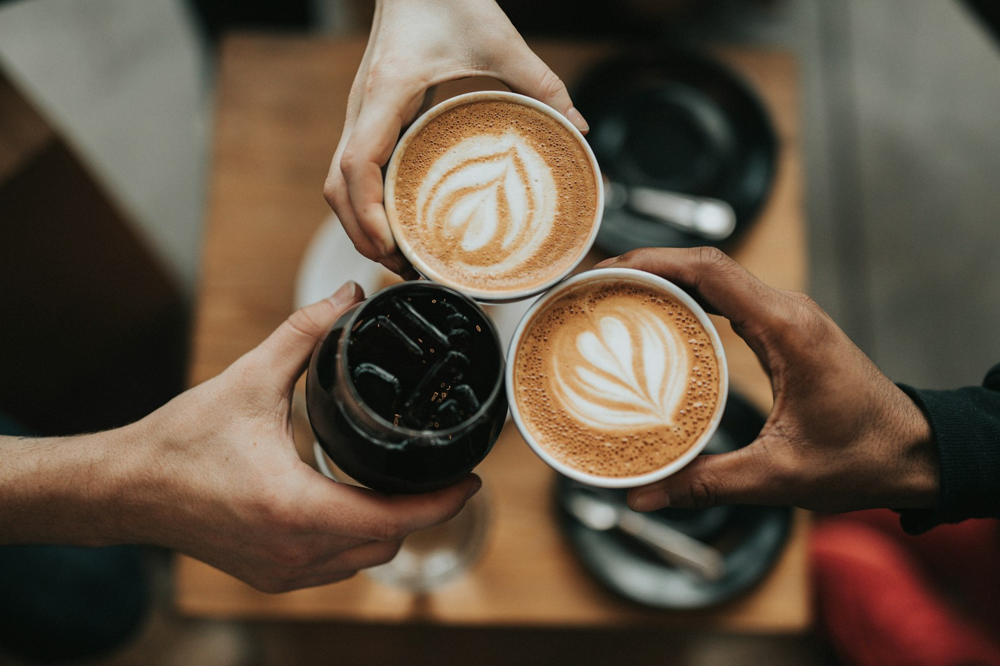

Un espresso
Una pausa breve para quienes disfrutan el café con carácter.
CAFÉ · CONVERSACIONES · MOMENTOS
Una buena taza.
Un nuevo comienzo.
EL PLACER DE HACER UNA PAUSA
Aurora es una propuesta de cafetería para disfrutar sin prisa: una taza recién preparada, una conversación que se alarga y un espacio para volver a empezar.
Explora nuestros momentos ↗
ENCUENTRA TU MOMENTO
Una pausa breve para quienes disfrutan el café con carácter.
Textura cremosa y una taza que invita a quedarse un poco más.
El ritual de preparar, esperar y descubrir cada sorbo.